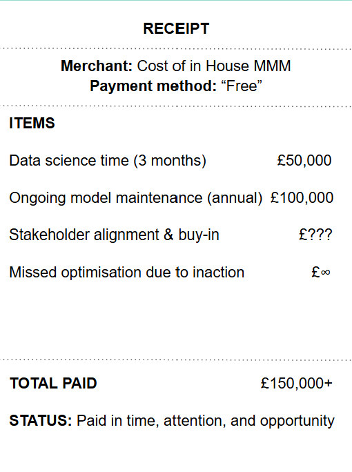

The short answer is: it depends.
But Marketing Mix Modelling (MMM) can cost anything from £10k to more than £1 million. The price depends on the provider, the complexity of your business and how frequently you need measurement.
This guide outlines the typical cost ranges for different approaches to MMM and the factors that influence pricing. These figures are indicative estimates, not definitive market prices, but they should help you understand the options available.
Enterprise MMM typically involves large consultancies, established research providers or bespoke measurement programmes supporting complex businesses.
These engagements may cover multiple markets, brands and business units, with extensive data requirements and significant consultancy support. They often include bespoke analysis, strategic recommendations and presentations to senior stakeholders.
The advantage is access to experienced consultants and dedicated support for complex measurement challenges. However, traditional project-based delivery often means long lead times, substantial costs and results that are delivered 3-6 months after the end of the year.
Modern MMM combines measurement expertise with software to make marketing measurement faster and more accessible. This is what we support at Linea. We use our software advantage to allow fast measurement for brands of all sizes.
In particular, you can automate parts of the process, including data ingestion, model updates and reporting. This reduces the manual work and allows for Always-on MMM. This allows for more regular updates, allowing brands to measure and test what marketing is incremental.
Depending on the provider and package, modern MMM may include always-on measurement, scenario planning, interactive dashboards, AI-powered tools and expert support to help you act on the measurement results.
An in-house approach has a few considerations. Some teams use their own software, some use open source such as Google Meridian and others use external modelling software (like ours at Linea).
However, the model used is only one part of the total cost. An effective in-house capability requires people with the right skills to prepare data, build and validate models, interpret results, maintain the process and translate findings into recommendations. This typically requires a team of two+ specialists. The fully loaded annual employment cost alone can exceed £150k, before accounting for additional infrastructure and tools.

Several factors influence the price of a Marketing Mix Modelling engagement.
A one-off analysis or annual model refresh will usually cost less than a monthly update or an always-on measurement system. More frequent updates require a reliable data pipeline and a process for monitoring model performance but allow brands to test & Learn.
Measuring one brand in one market is generally less complex than analysing multiple brands, countries, business units or product categories. The amount and quality of available data also affect the work required.
Some providers include dashboards, scenario planning and AI tools in their fees. Others charge separately for software, integrations or additional functionality. Check which tools are included and whether there are restrictions on how you can access your results.
Do you need a model and the results, or do you also need experts to explain the findings, challenge assumptions and help stakeholders make decisions? Advisory support, training and stakeholder presentations can all affect the overall price.
The headline price does not always represent the full cost of MMM.
I always encourage brands to think about on the internal time required to stand up your MMM programme, in particular:
➡️Data preparation, sourcing and integration: this includes connecting media platforms, sales data, pricing, promotions and external factors.
➡️Internal resources: the time your marketing, finance and data teams need to contribute.
Before choosing a provider, you also need to consider the long term impact. That includes:
➡️Ongoing support: who owns the model maintenance, validation, training and additional analysis?
➡️Clarifying whether you can access and retain your model, data and outputs if you change providers. At Linea, we believe that to drive trust in MMM brands need full transparency.
The cheapest option is not always the best value, and the most expensive option is not necessarily the most effective.
Consider how much you spend on media, how frequently you need measurement, the internal capabilities you already have and how you intend to use the results.
Ultimately, the value of MMM comes from the decisions you make from the analysis. A useful measurement programme should help you understand what is driving incremental growth, where to allocate budget and how to improve marketing performance.
The right question isn't just how much Marketing Mix Modelling costs. It's how much value you can get from using it.
Have any project on mind?
For immediate support: